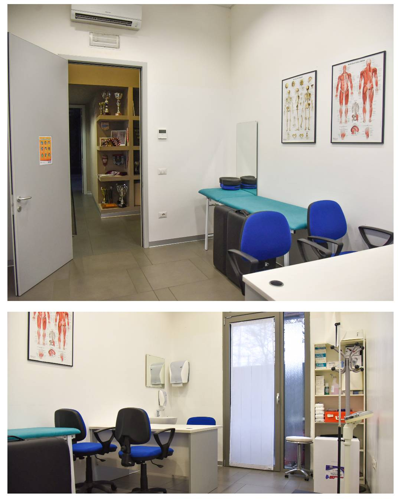

INFERMERIA
l’ infermeria è un locale a disposizione per la fisioterapia, per svolgere massaggi e per l’osteopatia ma il centro non presenta un esperto in materia, le squadre portano il proprio fisioterapista 